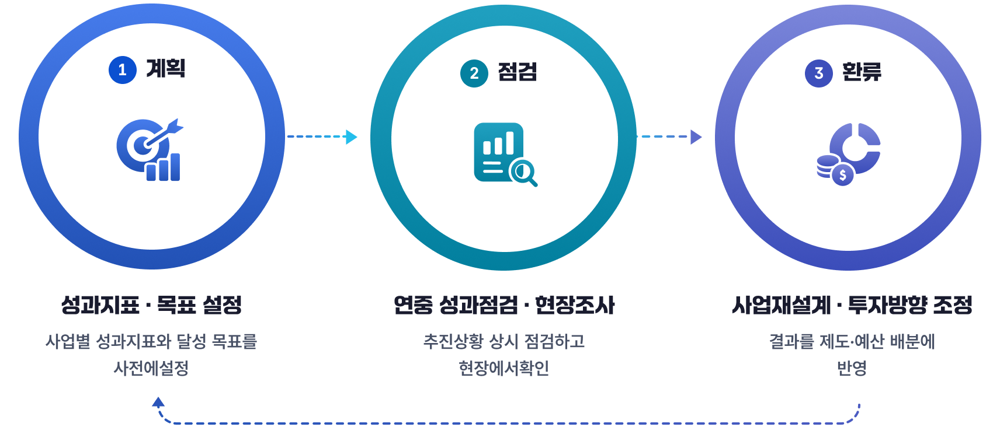
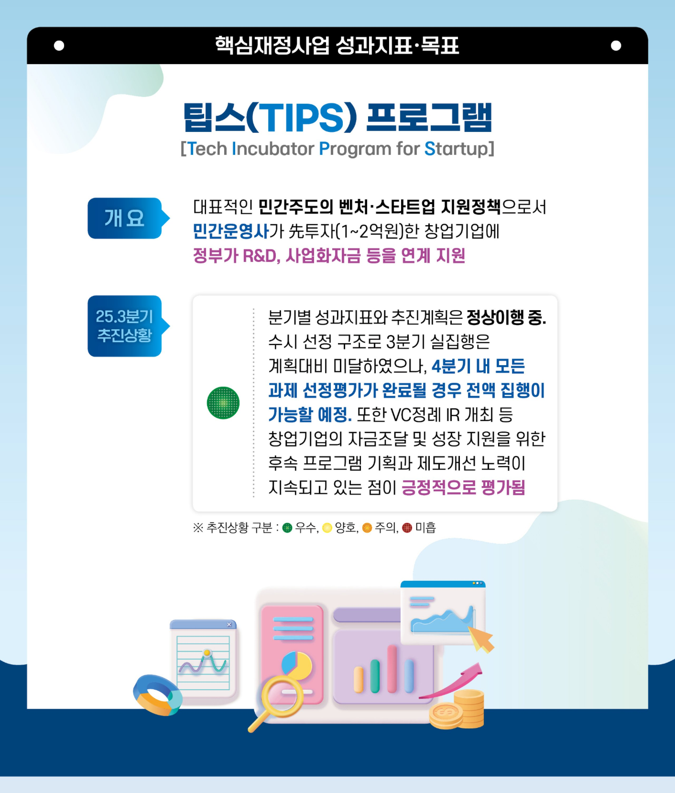

전략목표
4개
종합 정책방향
프로그램 목표
12개
전략목표 하위
성과지표
13개
달성도 측정
핵심재정사업
30개
성과 점검 대상
핵심재정사업은 국정과제·부처 핵심업무와 연결된 주요 사업입니다.
성과지표·목표 설정 → 연중 성과점검·현장조사 → 사업재설계·투자방향 조정 으로 이어지는 환류(Feedback) 순환으로 운용됩니다.
제도 개요 · 성과관리 체계

팁스(TIPS) 프로그램 — 성과지표·목표
